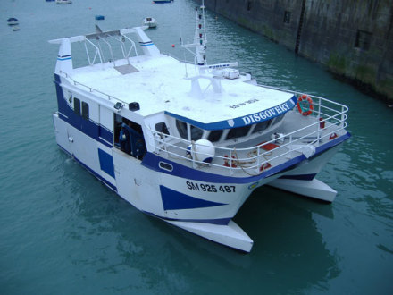
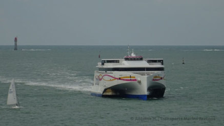
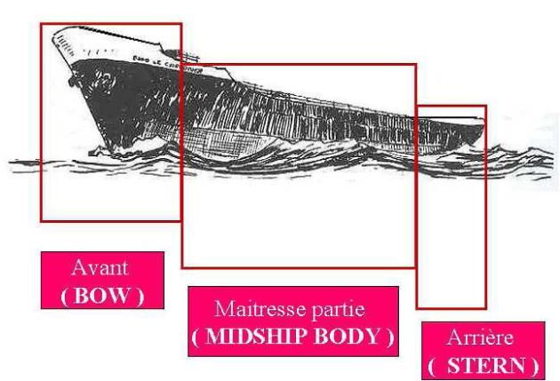

Les parties de la coque
Définition :
La coque est la partie inférieure du navire. Elle est étanche et assure la flottabilité du navire.
On parle alors de flotteur.
Elle peut être en bois, en métal, matériaux composites (fibres et résines) ou en ferro-ciment
Un navire peut avoir une ou plusieurs coques :
monocoque : une coque
catamaran : deux coques
trimaran : trois coques


La coque a des formes profilées lui permettant de faciliter l'écoulement des filets d'eau le long de sa surface.
Elle est constituée de trois parties bien distinctes :
La proue (bow) : la partie avant
La partie maitresse (midship body) : la partie centrale
La poupe (Stern) :la partie arrière
